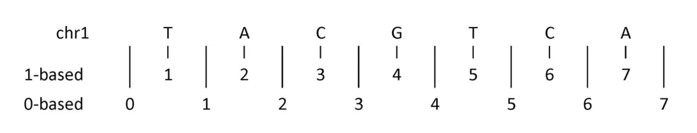
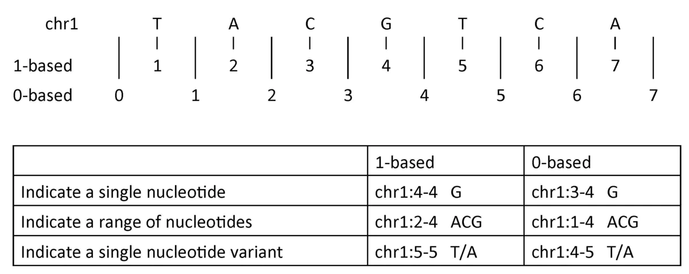
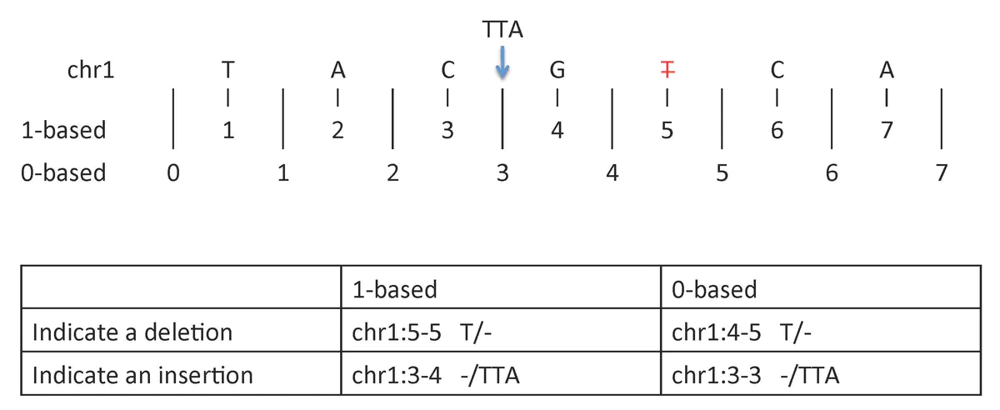

CheatSheet
首先先放上 0-based 和 1-based 的cheatsheet
| Format | Type |
|---|---|
| UCSC Genome Browser tables（USCS浏览器背后的数据集） | 0-based |
| BED | 0-based |
| BAM | 0-based |
| BCF | 0-based |
| narrowPeak (MACS2) | 0-based |
| SAF (featureCount) | 0-based |
| bedGraph | 0-based |
关于USCS浏览器背后的数据集，可见Database/browser start coordinates differ by 1 base
关于SAF的格式，网上好像没有找到确切的答案。只有 biostar 这里提了下，认为是0-based
| Format | Type |
|---|---|
| UCSC Genome Browser web interface（USCS浏览器上坐标） | 1-based |
| GTF | 1-based |
| GFF | 1-based |
| SAM | 1-based |
| VCF | 1-based |
| Wiggle | 1-based |
| GenomicRanges | 1-based |
| IGV | 1-based |
| BLAST | 1-based |
| GenBank/EMBL Feature Table | 1-based |
IGV的话，至少从fa的坐标来看，是1-based的
对于BigWig格式而言，有两种类型，具体见1-start coordinate system in use for variableStep and fixedStep
- 如果其是从bedgraph创建而来的，那么其就是0-based。
- 如果是从wiggle创建而来，其就是1-based。
cheatsheet的整合综合了
- The UCSC Genome Browser Coordinate Counting Systems
- Tutorial: Cheat Sheet For One-Based Vs Zero-Based Coordinate Systems
- Bioinformatics Data Skill-p268的表格
1-based与0-based
事实上，生信的文件系统中存在着两种坐标系统，1-based 和 0-based。这两种坐标系统各有利弊，产生的原因也很复杂，其中还关系到不同编程语言的坐标格式。
0-based和1-based的主要区别和优势有:
| 0-based | 1-based |
|---|---|
| 每条染色体的第一个碱基坐标为0 | 每条染色体的第一个碱基坐标为1 |
| 半闭半开区间 -> [start, end) | 闭区间 -> [start, end] |
| 区间长度为 end-start | 区间长度为 end-start + 1 |
| 最小的区间单位为0，例如[1,1) | 最小的区间单位为1，例如[1,1] |
| 相关语言：Python, C | 相关语言：R |
0-based的话，其计算区间更加的方便，比如一个区间是[4,10)，那么其就是6个碱基长度。而对应的，1-based，就是[5,10]了，要 10-5+1 = 6 。
0-based事实上还可以代表 宽度为0 的区间，这一点在你定义核酸酶切割位点的时候是比较有用的，比如[23, 23)。毕竟你切得是两个碱基之间，而不是某个特定碱基。当然 1-based 的话，有时候会用[24,23] 来代表……
Py（应该还有C）的话，对于一个字符串的选择是从0开始的，其在区间选择的时候，是半闭半开区间，比如下面
2
'TTAC'
而R在区间选择的时候，对于一个字符串的选择是从1开始的，用到的是闭区间
2
[1] "TTAC"
这部分主要来自Bioinformatics Data Skill p265-266

- 1-based：数字是直接代表一个碱基的
- 0-based：在两个数字之间才代表一个碱基

- 1-based：单个碱基，单个多态性位点，碱基区间都是与数字对应的
- 0-based：单个碱基，单个多态性位点，碱基区间是由两个数字之间对应的

- 1-based：
- 缺失对应的是这个缺失碱基的数字坐标，这里是5号碱基T的缺失，我们之前使用[5, 5]代表的T，那么坐标就是[5, 5]
- 插入对应的是两个碱基数字坐标中间，这里是3号C和4号G之间插入了TTA。我们之前使用[3, 4]代表的CG，那么插入坐标就是[3,4]
- 0-based：
- 缺失对应的是这个缺失碱基两侧的数字坐标，比如我们之前是用[4,5)代表的T，那么这里就是4-5
- 插入对应的是这个插入发生的数字坐标，这里插入发生在C和G之间。我们用[2,3)代表C，用[3,4)代表了G，那么[3,3)就代表了CG中间那个位置。
其实 0-based 和 1-based 一般还不太要紧，但对于 VCF 这种锱铢必较的位点位点，了解 0 和 1就很重要了。
实际上，0 和 1之间的转换还是比较方便的，根据 The UCSC Genome Browser Coordinate Counting Systems 里面说
- 0-start, half-open (0-based) -> **1-start, fully-closed (1-based)**，只需要在start那里+1，而end不用动
- 1-start, fully-closed (1-based) -> 0-start, half-open (0-based) ，只需要在start那里-1，而end不用动
一些转换实例
USCS基因组浏览器的转换
The UCSC Genome Browser Coordinate Counting Systems 文章中提到了，USCS内源数据和基因组浏览器上数据的转换:
| 0-based | 1-based |
|---|---|
| “BED” format (Browser Extensible Data): chr1 127140000 127140001 Note: Spaces, not punctuation When using BED format, browser & utilities assume coords are 0-start, half-open. | “Position” format: chr1:127140001-127140001 Note: Punctuation used, no spaces When using “position” format, browser & utilities assume coords are 1-start, fully-closed. |
| Stored in UCSC Genome Browser tables | Positioned in UCSC Genome Browser web interface |
| To convert to 1-start, fully-closed: add 1 to start, end = same | To convert to 0-start, half-open: subtract 1 from start, end = same |
还提到了用liftOver软件转换的一些实例，大家可以自己去看
前面那篇biostar文章中，也提到了他们课题组自己开发的一个格式转换工具convert_zero_one_based
IGV的格式转换
亲测narrowPeak放入IGV里面会start会加1，大家可以随便拿个narrowPeak试试
Chr1 802633 802999 -> Chr1 802634 802999
Grange转换成bed
可以参考Question: How To Write Data In A Granges Object To A Bed File. 这个问答
里面提到了手动转换
1 | # 注意 1 -> 0的话，start要-1 |
也可以用 rtracklayer 包转换。
narrowPeak用ChIPseeker注释
其实这篇文章的一开始起意于Y叔这篇文章基因组位置读进去竟然有一个位移，才让我花了时间去好好探究下 0 和 1。经过上面的理解，我们就会明白，之所以输出的结果会比，输入的bed文件或者narrowPeak文件，start部分要+1。就是因为bed是0-based，而Y叔的注释Peak的主体是Grange格式，其是1-based格式。如果我们去细究Y叔的代码的话，就会发现其在读取Peak那个函数中，在start部分+1了。
但还有个小问题就是，由于Txdb对象的seqlevels有时候跟我们narrowPeak的seqlevels是不匹配的，比如一个是1，另一个是Chr1。所以我们时常会自己手动转换GRange。但annotatePeak对于+1这一步实际上是发生在读取Peak那一步的，所以你如果输入的是自己准备的GRange，那么annotatePeak就不会+1了。这就意味着，如果你是自己用GRange函数手动转换bed成的GRange或者由其他包产生的GRange格式，就要自己考虑下是否+1这个问题了。